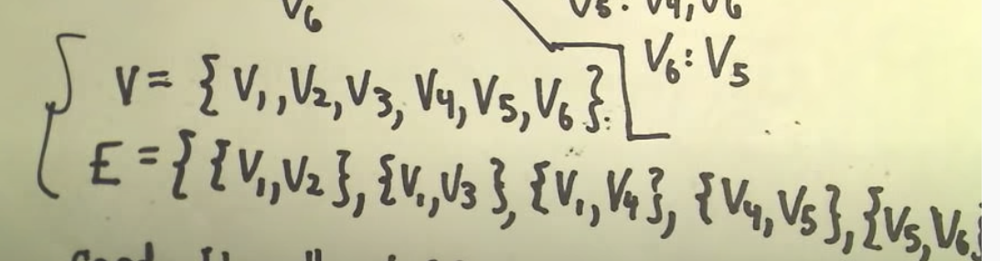
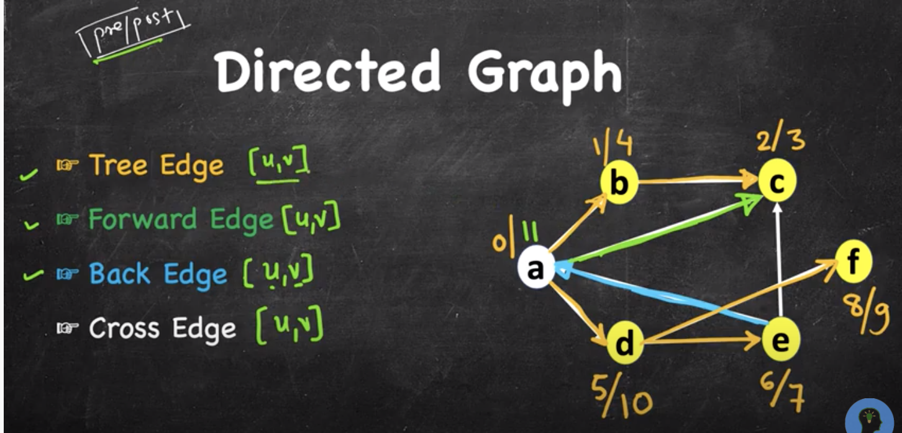

Need to pick up some graph knowledge to be more ready for my Parallel and Distributed Computing course.
Defining Graph
I watched a quick video, Graph Theory - An Introduction, where I took all the images I used in this part.
Graph is a nonempty finite set of vertices V, along with a set E of 2-element subsets of V.
The elements of V are called vertices The elements of E are called edges.

- Formally, a graph G is an ordered pair of disjoint sets (V, E), where E Í V × V. Set V is called the vertex or node set, while set E is the edge set of graph G.
- Typically, it is assumed that self-loops (i.e. edges of the form (u, u), for some u Î V) are not contained in a graph. – Definition frompersonal.kent.edu
Graph Order/Graph Cardinality
|G| = |V| = number of vertices or graph order.
Graph Size
|E| = number of edges or graph size.
Degree of a vertex
Number of vertices coming out of edges from the vertex.
deg (v1) = 3.
v1’s neighbours: v2, v3, v4
Presentation of Graph
Edge Set
Adjacency List
Adjacency Matrix
Tree
Graph with no circuit(loop): if you travel from v1 to v4, the only way to come back to v1 is through backtrack.
Isomorphic graph
In graph theory, an isomorphism of graphs G and H is a bijection （双射） between the vertex sets of G and H. such that any two vertices u and v of G are adjacent in G if and only if f(u) and f(v) are adjacent in H.
Concepts related to graph theory
Digraph
Directed Graph.
A directed graph (or digraph) is a graph that is made up of a set of vertices connected by edges, where the edges have a direction associated with them.
Arcs
In one restricted but very common sense of the term,[5] a directed graph is an ordered pair G=(V,E) comprising:
- V, a set of vertices (also called nodes or points);
a set of edges (also called directed edges, directed links, directed lines, arrows or arcs) which are ordered pairs of vertices (that is, an edge is associated with two distinct vertices).
Path
A path is a sequence of vertices with the property that each vertex in the sequence is adjacent to the vertex next to it.
Simple Path
A path that does not repeat vertices is called a simple path.
Circuit
A circuit is path that begins and ends at the same vertex.
Weights/Costs
In many applications, each edge of a graph has an associated numerical value, called a weight.
- Weighted graphs may be either directed or undirected.
- The weight of an edge is often referred to as the “cost“ of the edge.
- In applications, the weight may be a measure of
- the length of a route,
- the capacity of a line,
- the energy required to move between locations along a route, etc.
Shortest Path
The shortest path problem is about finding a path between vertices in a graph such that the total sum of the edges weights is minimum.
Distance
Geodesic distance between a pair of nodes = minimum length of a connecting path, aka length of a shortest path (hop count in unweighted graphs).
How we define distance is directly related with how we define shortest path.
- For unweighted graph, or for a weighted graph but we choose to ignore the weight, the shortest path/distance are both looking at the hop count
- For weighted graph and we choose to care about the weight/cost, the shortest path/distance are both looking at the total weight/cost and do not care about the count of edges.
Eccentricity of a vertex
The eccentricity of a vertex v is the greatest distance between v and any other vertex.
Diameter
Diameter = maximum distance between any pair of nodes.
- i.e. the maximum distance among the shortest paths connecting each pair of nodes in the graph.
- i.e. the maximum eccentricity of any vertex in the graph
Radius
Radius = minimum maximum distance, for any node to any other node (minimum attained at centers).
- i.e. the minimum eccentricity of any vertex in the graph
- i.e. the eccentricity of the graph’s centre
Spanning Tree
A spanning tree T of an undirected graph G is a subgraph that is a tree which includes all of the vertices of G, with a minimum possible number of edges.
Minimum Spanning Tree
A minimum spanning tree (MST) or minimum weight spanning tree is a subset of the edges of a connected, edge-weighted undirected graph that connects all the vertices together, without any cycles and with the minimum possible total edge weight.
Dijkstra’s Shortest Path Algorithm
See page 5 of this presentation for implementation details.
Dijkstra’s SSAD Algorithm only works for graphs with non-negative weights.
We assume that there is a path from the source vertex s to every other vertex in the graph.
- Let S be the set of vertices whose minimum distance from the source vertex has been found.
- Initially S contains only the source vertex.
- The algorithm is iterative, adding one vertex to S on each pass.
- We maintain a table D such that for each vertex v, D(v) is the minimum distance from the source vertex to v via vertices that are already in S (aside possibly from v itself).
- Greed: on each iteration, add to S the vertex v not already in S for which D(v) is minimal.
Jarnik-Prim MST Algorithm
By modifying Dijkstra’s SSAD Algorithm to
- build a list of the edges that are used as vertices are added, and
- storing the distance from nodes to the current tree (rather than from nodes to the source)
We obtain Prim’s Algorithm (V Jarnik, 1930 and R C Prim, 1957).
Difference with Dijkstra
- Dijkstra’s SSAD Algorithm not necessarily find a minimum-weight spanning tree, because each steps only greedily finds the shortest path from the current node to the source node.
- By contrast, Jarnik-Prim’s algorithm greedily finds the path from the current node to any node in the current tree
DFS
DFS - Types of Edges
Image shot from Video: DFS - Types of Edges | Edge Classification | Tree Edge, Back Edge, Forward Edge, Cross Edge
Digraph
- Tree Edge: Part of the tree
- Forward Edge: edge from ancestor to grandchildren
- Cross Edge: edge connecting two nodes with different parents
- Back Edge: edge from grandchildren to ancestor
The numbers beside each node is the pre/post time. Now we can see the relationship between the pre/post time and the types of edges:
- For Tree Edge [u,v]:
- pre[u] < pre[v] < post[v] < pre[u]
- u is the parent, and v is the children.
- For Forward Edge [u,v]:
- pre[u] < pre[v] < post[v] < post[u]
- u is the ancestor, and u is the grandchildren.
- For Back Edge [u,v]:
- pre[v] < pre[u] < post[u] < post[v]
- v is the ancestor, and u is the children.
- For Cross Edge [u,v]:
- pre[v] < post[v] < pre[u] < post[u]
- v gets visited and then u.
Undirected Graph
There will only be two types of edges:
- Tree Edge
- Back Edge
Why no cross edge? In undirected graph, what would have been “cross edge” would be taken as tree edge.
For example, the edge c-> e (now c-e) was taken when we traverse to c.
Shortest path tree v.s. Min-cost tree
- Shortest path tree must have a root. Then the tree is one that all node’s path the the root is the shortest possible path.
- Min cost tree does not need a root to define it, it just looks for a tree that has the minimum total weight of edges.